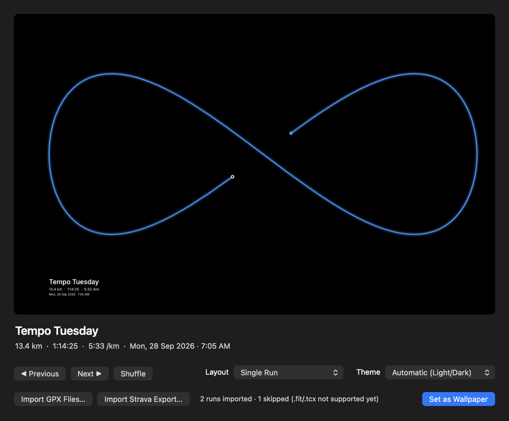
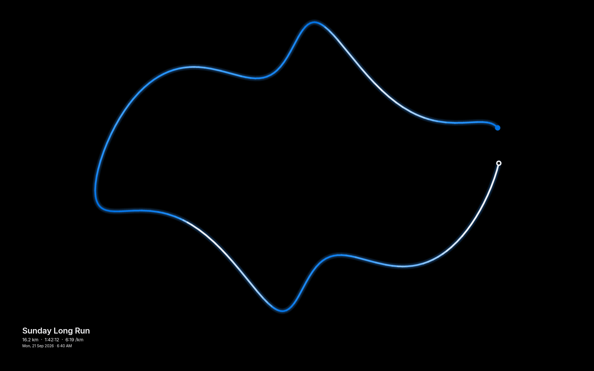
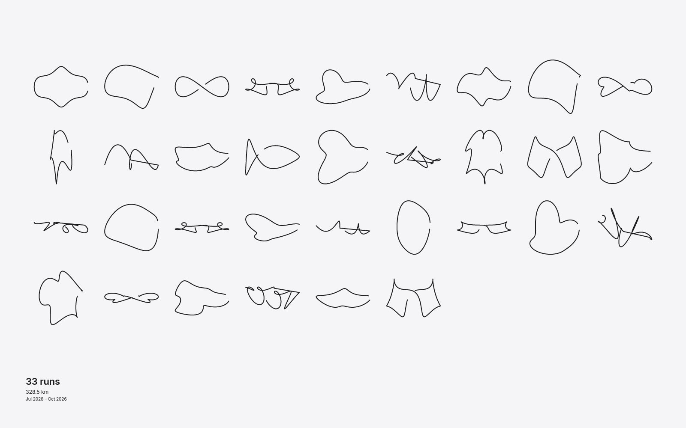
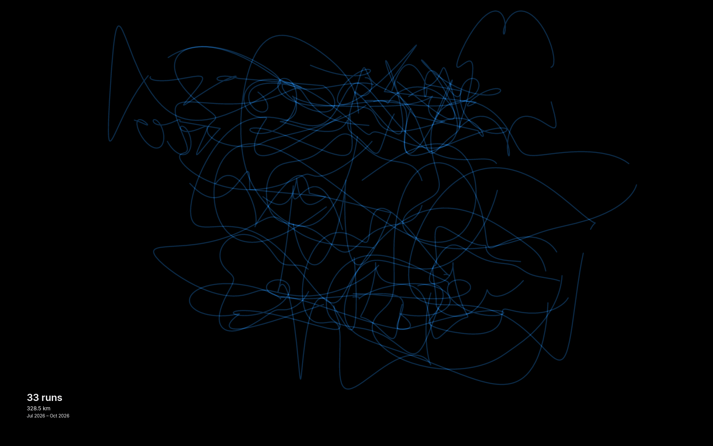

For macOS · Free & open source
Every run,
on your desktop.
RunReCap turns the GPS tracks of your runs into a beautiful, minimal wallpaper for your Mac. Import your Strava export, pick a look, and every kilometre becomes art.

Features
Made for runners.
Built like a Mac app.
Everything you need to turn months of training into something you see every day, and nothing you don't.
Strava import
Drop your Strava export or any GPX file. Names and run types come along, and duplicates are skipped.
Three layouts
One run up close, your whole season as a grid, or a heatmap where your favourite streets glow.
Your own photo
Upload a photo from your favourite race or trail. Your route is drawn on top, with a dim control to keep it readable.
Color by effort
A solid color, a gradient, or colored by pace, elevation, heart rate or time of day.
Any font
Captions in Inter by default, any font on your Mac, or a .ttf / .otf of your own.
Preview first
See exactly how it looks before anything changes. One click sets it, and one click gives you your old wallpaper back.
Every display
Each screen gets a wallpaper at its native resolution, kept clear of the menu bar, notch and Dock.
Private by design
Everything stays on your Mac. The start and end of each route are hidden, so your home never shows on a screen share.
Updates itself
Rotates to a new run every hour or day, lives in your menu bar, and updates itself with one click.
Layouts
Three ways to see your miles.
Switch any time from the window or the menu bar. Every layout works with every theme, and with your own photo.



Background photo
Your run, over your view.
Drop in a photo from the race, the summit, or your Sunday loop. RunReCap draws the route on top and tells you if the photo is sharp enough for your screen.
- JPEG, PNG, HEIC (iPhone), TIFF and WebP
- Cropped to fill, never stretched
- Dim slider keeps the route and text readable
| Display | Recommended photo |
|---|---|
| 13" / 14" MacBook | 2880 × 1800 px |
| 16" MacBook Pro | 3456 × 2234 px |
| 4K display | 3840 × 2160 px |
| 5K Studio Display / iMac | 5120 × 2880 px |
Download & install
Up and running in a minute.
Download
Get the latest RunReCap.dmg from GitHub Releases.
Drag to Applications
Open the disk image and drag RunReCap onto the Applications folder.
Open RunReCap
Launch it from Applications. The window opens with a preview, ready for your runs.
The app isn't notarized by Apple yet, so macOS asks you to confirm once. On macOS 15 or later, open System Settings → Privacy & Security and click Open Anyway. On macOS 13–14, right-click RunReCap in Applications and choose Open.
Requires macOS 13 Ventura or later · Apple Silicon or Intel · 6.5 MB download
Bring your runs.
RunReCap reads Strava's full account export, so years of runs arrive in one go.
- On strava.com, open Settings → My Account.
- Choose Download or Delete Your Account → Request your archive. Strava emails you a
.zip, usually within a few hours. - Drop the
.ziponto the RunReCap window, then click Set as Wallpaper.
Don't use Strava? Any .gpx file from Garmin, Apple Watch apps, Coros or Suunto works too.
Roadmap
This is just the first lap.
RunReCap is young and moving fast. Here's where it's headed.
The macOS app
- Strava export & GPX importYears of runs in one drop.
- Single, Grid & HeatmapPlus themes, fonts and route colors.
- Background photosYour route over your view.
- One-click updatesNew versions install themselves.
Strava integration
- Connect your Strava accountSign in once, and new runs appear on your desktop automatically. No more exports.
- Settings windowPick fonts, colors and themes with a live preview.
- Signed & notarized by AppleOpens straight away, with no security prompt.
Windows & beyond
- Windows versionRunReCap on Windows 10 and 11 desktops.
- Live wallpapersRoutes that draw themselves, and pause when you're on battery.
- More sourcesApple Health, Garmin Connect and
.fitfiles. - Posters & sharingExport any layout as a print-ready poster.
…and so much more. Have an idea? Open an issue on GitHub.
Your miles deserve a better background.
Free, open source, and built in Rust for macOS.